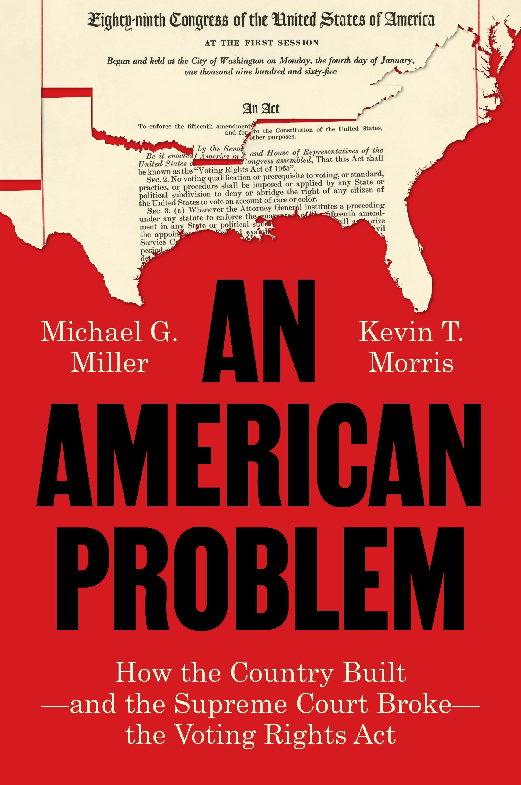

Books

An American Problem
How the Country Built — and the Supreme Court Broke — The Voting Rights Act
With Michael G. Miller · Princeton University Press · October 2026
From the publisher:
The Voting Rights Act of 1965 finally made good on the promise of the Fifteenth Amendment, which nearly a century before had granted Black Americans the right to vote. The Voting Rights Act was the crowning achievement of the Civil Rights Movement, which had battled for years against voting laws that made it all but impossible for Black Americans to cast a ballot. The act was a resounding success, bringing Americans of all races and ethnicities into the democratic process. And then, in 2013, the Supreme Court brought this progress to a screeching halt with their decision in Shelby County v. Holder. In this book, Michael G. Miller and Kevin T. Morris offer a sweeping history of the Voting Rights Act and the attacks it has suffered.
Miller and Morris explain that central to the act’s success was its requirement that states and localities with a history of discrimination get federal permission to change their voting rules—a novel approach known as “preclearance.” It was this requirement that the Shelby County decision eviscerated. Miller and Morris trace the devastating effect of Shelby County, using advanced research techniques to prove that the decision unleashed racially discriminatory voting policies. The result is a nation in which Americans of color cast fewer ballots, and in which the ballots they do cast count for less. But the story does not end there: the Supreme Court continues to undermine what remains of the Voting Rights Act. What President Lyndon B. Johnson called “an American problem,” formerly kept in check by a strong federal law, once again threatens voting rights.
Praise for An American Problem
“When gutting the Voting Rights Act, the Supreme Court has told one story. This book tells another—of the true fight for our most fundamental right and of the discriminatory forces that continue to weigh down our democracy.”
—Vanita Gupta, former United States Associate Attorney General
“Miller and Morris offer the clearest evidence yet of the ongoing need for federal voting rights protections. Their comprehensive and methodical analysis reveals a sad truth for our democracy: after Shelby eliminated preclearance, racially discriminatory policies flourished not only across the South, but the country as a whole. This book should be required reading for the U.S. Supreme Court because it makes clear the inequalities that lie ahead as voting rights continue to crumble in America.”
—Matt A. Barreto, UCLA Voting Rights Project
“Miller and Morris, using hard data not hyperbole, demonstrate America’s backsliding on voting rights: why and how it happened, and what comes next. A readable but rigorous volume.”
—Richard L. Hasen, UCLA Law
“Miller and Morris brilliantly trace the rise and fall of Section 5 of the Voting Rights Act—and its consequences for American democracy. With a nuanced and detailed analysis of election policy and administrative changes since the Shelby decision, An American Problem is a must-read for scholars, practitioners, and anyone who cares about voting rights.”
—Jake Grumbach, University of California, Berkeley
“The Roberts court promised that gutting the Voting Rights Act wouldn’t harm minority voters. Miller and Morris prove how catastrophically wrong that was.”
—Ari Berman, author of Give Us the Ballot: The Modern Struggle for Voting Rights in America
“This is a tour de force of investigative research, rigorous fact-finding, and compelling storytelling that might even convince the conservative supermajority that they’ve taken the nation down a dark, dangerous path. Miller and Morris are the historians and truth-tellers we need. Everyone who has a sense that the slow shredding of the VRA signals a broader problem with the Court needs to read it—and demand action.”
—David Daley, author of Antidemocratic and Ratf**ked
“Offers a deep understanding of today’s stresses on democracy by drilling into the story of America’s foundational freedom: the right to vote.”
—Congressman Chris Deluzio